Edizione 2024: Cosa rende l’uomo
uomo?
Venite a scoprirlo in 3 giorni di mostre, incontri, tanto cibo e cose belle.
Venite a scoprirlo in 3 giorni di mostre, incontri, tanto cibo e cose belle.
COS'È MuD?
1.  PROSPETTIVA
PROSPETTIVA
PROSPETTIVA
Desiderio di mettersi in discussione, riflettere e farsi domande
2. COMPAGNIA
COMPAGNIA
COMPAGNIA
Bisogno di stare insieme, condividere e divertirsi
3. DIALOGO
DIALOGO
DIALOGO
Libertà di confrontarsi, partendo dai temi che più ci riguardano
4. CURIOSITÀ
CURIOSITÀ
CURIOSITÀ
L’essere curiosi di esporsi, di partecipare, di essere vivi e
presenti
5. CAMMINO
CAMMINO
CAMMINO
La proposta di un percorso interessante, che apra a scoperte
sempre nuove
ATTIVITÀ
1. MOSTRE
2. INCONTRI
3. EVENTI SERALI
4. RISTORO
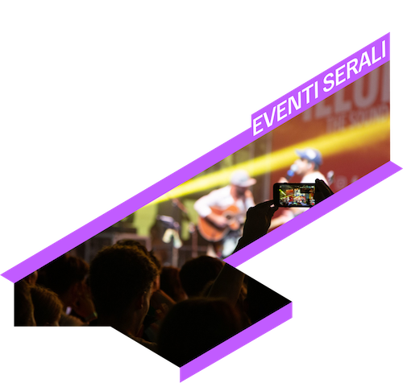

 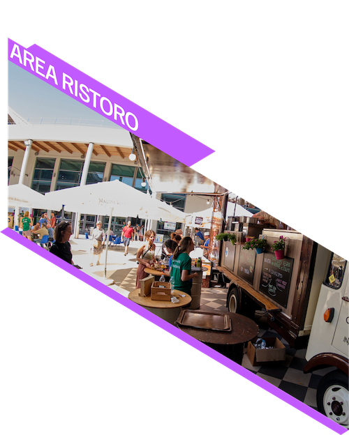
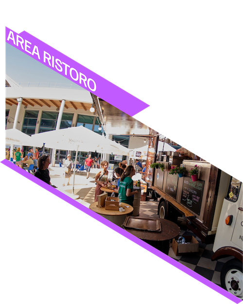
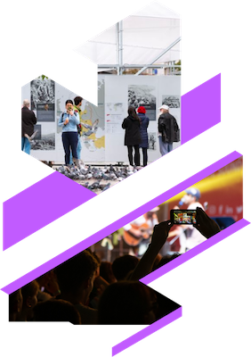
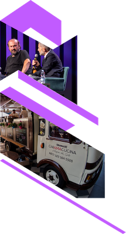
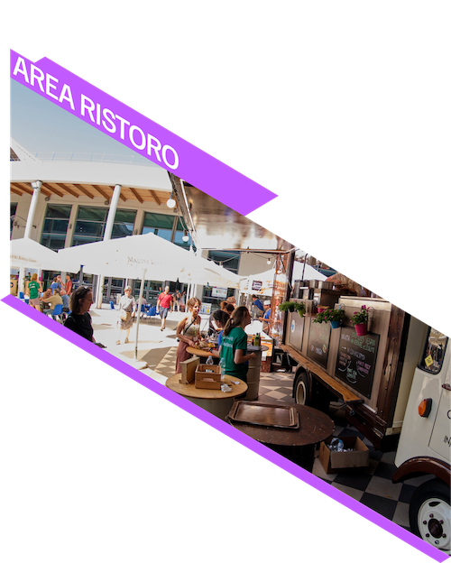
TEMA
"COSA RENDE L'UOMO UOMO?"
1. IN UNIVERSITÀ
Vivere l’università come l’occasione di scoprire sempre di più chi
siamo.
Desiderio di vivere l’università come l’occasione di scoprire
sempre di più chi siamo e qual è il nostro posto nel mondo.
2. NEL LAVORO
È per noi occasione per far fiorire il nostro io?
La mostra si interroga sulla possibilità rappresentata dal lavoro:
é per noi occasione per far fiorire il nostro io?
3. NEL DRAMMA
In un mondo così profondamente drammatico è possibile essere
uomini?
Davanti all’alluvione in Romagna o alle guerre in Ucraina e in
Medio Oriente, ci poniamo un interrogativo su tutti: in un mondo
così profondamente drammatico è possibile essere uomini?
MAPPA
PIAZZA LEONARDO DA VINCI
MILANO (MI)
MILANO (MI)
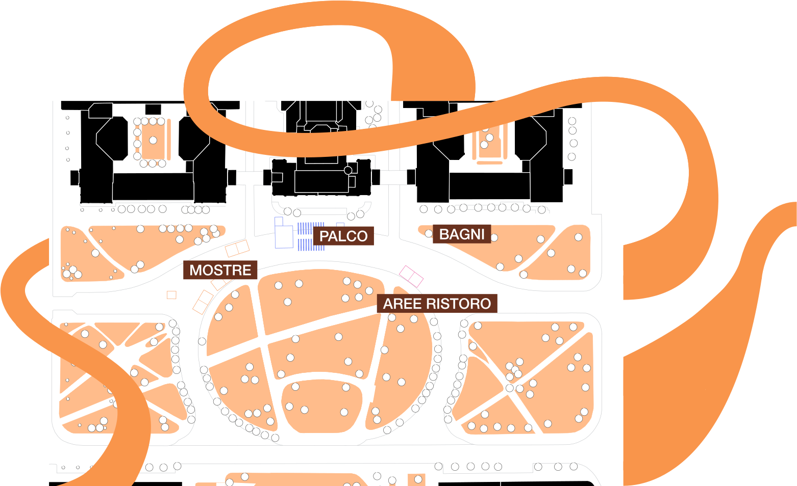
SOSTIENICI
PERCHÈ CONTRIBUIRE?
Il pubblico
Questa esperienza coinvolgente per studenti si svolgerà di fronte al
Politecnico di Milano, offrendo attività stimolanti che invitano gli
spettatori a riflettere e dialogare sulla vita quotidiana in modo
approfondito. Clicca per scoprire come rendere uniche le tue
circostanze quotidiane!
Cosa offriamo
Per garantire il successo dell'evento stiamo cercando supporto
finanziario da aziende locali e non solo, offrendo loro visibilità
durante l'evento. Le donazioni, con possibilità di detrazione fiscale,
contribuiranno al finanziamento, mentre la promozione su siti web e
social networks, con una prevista portata di 5 mila followers e 10-20
mila profili coperti, offre un'opportunità unica di visibilità.
 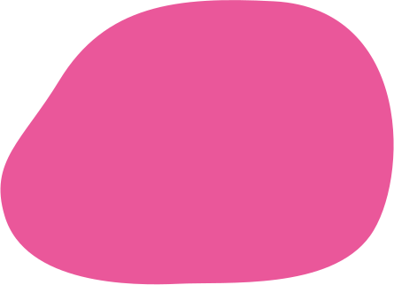
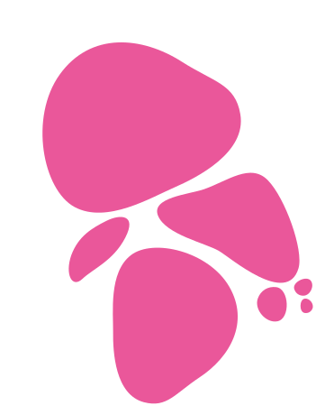
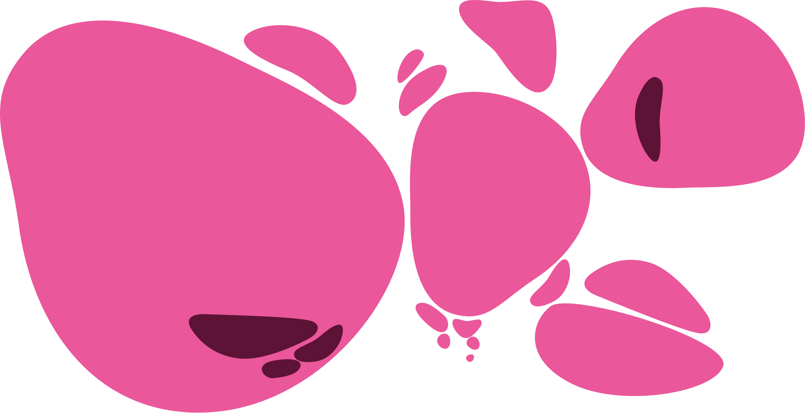
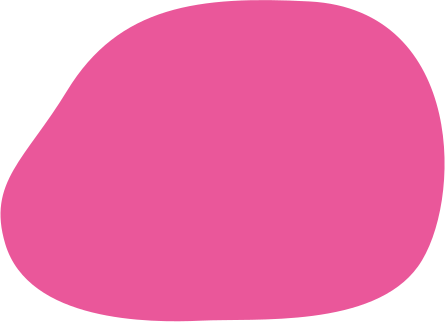
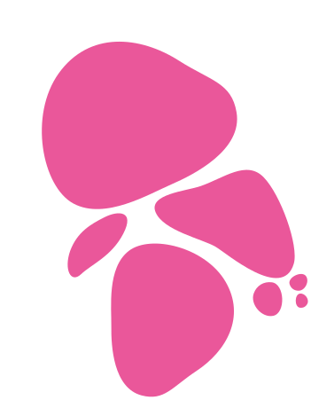
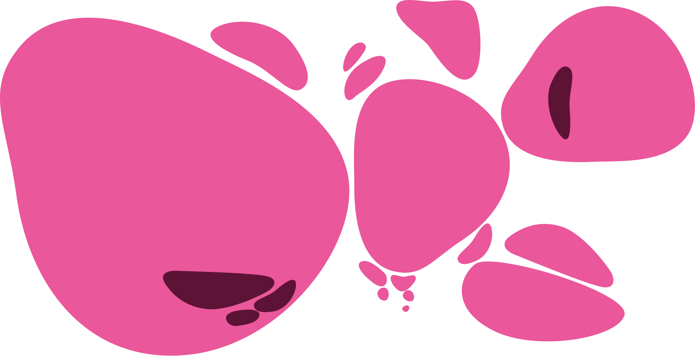
CONTATTI
Questo evento ha preso vita grazie al generoso supporto di:
 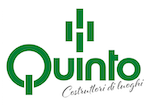
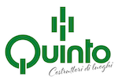